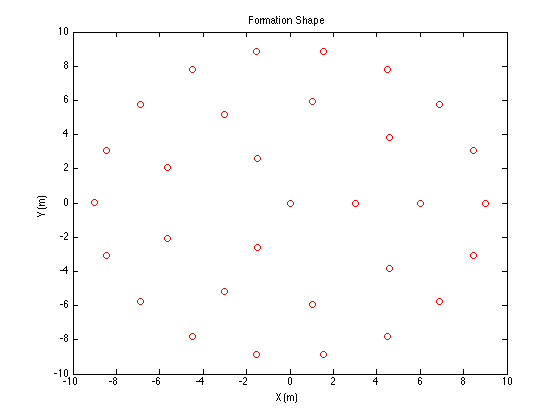

Contents
function [ X ] = Nbots( n )
Initializing Desired formation
n=32
POI = zeros([n 2]);
X = zeros([n 2]);
d = zeros([n 1]);
I = zeros([n 1]);
n =
32
Creating 4 rings of radiun 3q, s.t q = [0x4] with evenly spaced offsets on each ring
POI(1,1) = 0;
POI(1,2) = 0;
for t = 2:7
POI(t,1) = 3*cos(t*((2*pi)/3));
POI(t,2) = 3*sin(t*((2*pi)/3));
end
for t = 8:16
POI(t,1) = 6*cos(t*((2*pi)/9));
POI(t,2) = 6*sin(t*((2*pi)/9));
end
for t = 17:34
POI(t,1) = 9*cos(t*((2*pi)/18));
POI(t,2) = 9*sin(t*((2*pi)/18));
end
for t = 34:n
POI(t,1) = 12*cos(t*((2*pi)/25));
POI(t,2) = 12*sin(t*((2*pi)/25));
end
Creating 2 Evenly distributed Concentric rings of radius R1 and R2 (OLD FORMATION)
figure(1);
plot(POI(:,1),POI(:,2),'ro');
title('Formation Shape')
xlabel('X (m)')
ylabel('Y (m)')

Initializing Locations
a=10;
b=-10;
for i = 1:n
for j=1:2
Pos=(b-a)*rand(i,j)+a;
end
end
Getting Distances
distance = zeros(n);
for j = 1:n
for i = 1:n
distance(i,j) = sqrt(((Pos(j,1)-POI(i,1))^2)+(((Pos(j,2)-POI(i,2))^2)));
end
end
Finding and selecting A minimum
for i = 1:n
[d(i,1), I(i,1)] = min(distance(:,i));
distance(I(i,1),:) = 1000000;
end
Creating Tabledata With Offset As Output Variable X
for i = 1:n
X(i,4) = POI(I(i,1),1);
X(i,5) = POI(I(i,1),2);
X(i,1) = Pos(i,1);
X(i,2) = Pos(i,2);
X(i,3) = 0;
X(i,6) = I(i,1);
end
ans =
-1.5471 9.7475 0 -1.5628 8.8633 23.0000
4.0339 -4.8319 0 4.5963 -3.8567 8.0000
-4.7220 1.6918 0 -5.6382 2.0521 13.0000
-8.5158 -2.8287 0 -8.4572 -3.0782 28.0000
-9.5643 1.8555 0 -8.4572 3.0782 26.0000
9.4869 -9.9536 0 8.4572 -3.0782 17.0000
-8.2546 1.5421 0 -9.0000 0.0000 27.0000
1.9902 8.0537 0 1.5628 8.8633 22.0000
-2.8597 -0.9697 0 -1.5000 -2.5981 5.0000
-6.3623 2.9517 0 -6.8944 5.7851 25.0000
-0.4401 4.1272 0 -1.5000 2.5981 7.0000
9.7953 -5.0968 0 9.0000 -0.0000 18.0000
-9.9866 2.9498 0 -5.6382 -2.0521 14.0000
-6.0670 8.0194 0 -4.5000 7.7942 24.0000
-4.1741 3.4635 0 -3.0000 5.1962 12.0000
-2.9378 -5.5812 0 -3.0000 -5.1962 15.0000
-0.5654 8.0404 0 1.0419 5.9088 11.0000
2.8767 3.4583 0 4.5963 3.8567 10.0000
-4.2872 -5.4531 0 -4.5000 -7.7942 30.0000
-9.0418 3.8559 0 -1.5000 2.5981 4.0000
-5.6492 6.2011 0 0 0 1.0000
-7.4170 -8.5185 0 -6.8944 -5.7851 29.0000
-9.9474 -1.3748 0 -1.5000 -2.5981 2.0000
-8.1085 5.8660 0 3.0000 -0.0000 3.0000
-0.7298 5.9864 0 4.5000 7.7942 21.0000
-8.7045 3.6782 0 3.0000 -0.0000 6.0000
-7.8107 -7.6938 0 -1.5628 -8.8633 31.0000
-1.4598 -4.3991 0 1.0419 -5.9088 16.0000
-0.7267 -0.5168 0 6.0000 -0.0000 9.0000
-0.5472 8.7394 0 6.8944 5.7851 20.0000
-4.1466 8.9089 0 8.4572 3.0782 19.0000
9.8722 1.2153 0 1.5628 -8.8633 32.0000